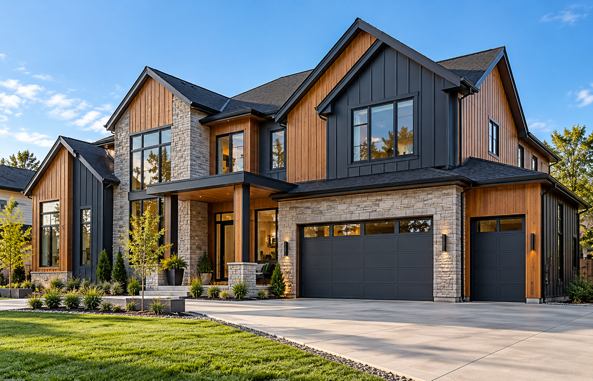
Scale
Exterior Dimensions
Total square footage, wall heights, and gable geometries.
Siding project pricing can vary depending on the home’s size, material selection, preparation requirements, architectural details, and installation complexity. We believe in total financial clarity before any commitment.
Because residential siding wraps an existing structure, a flat per-house price is unrealistic. An honest, accurate estimate requires evaluating the eight specific variables of your property:

Scale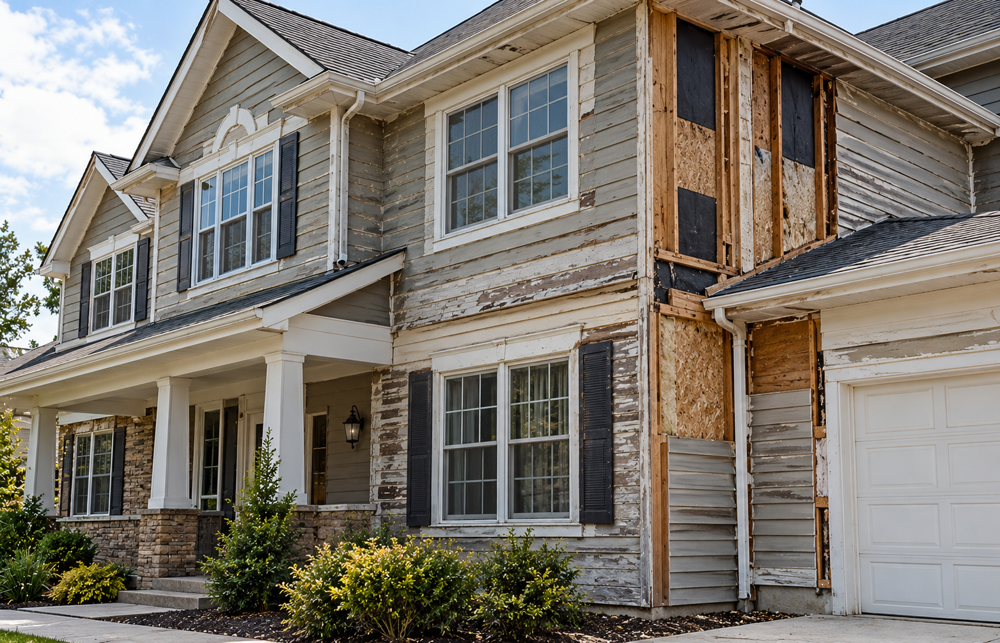
Condition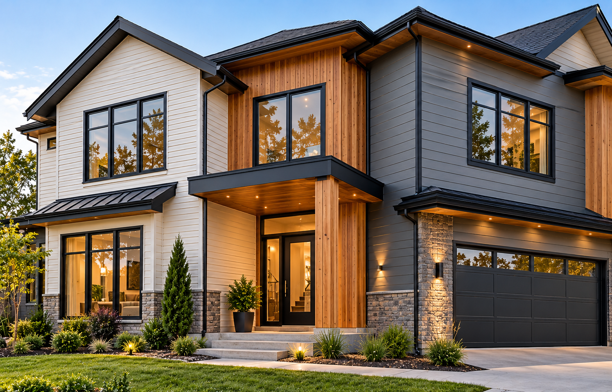
Material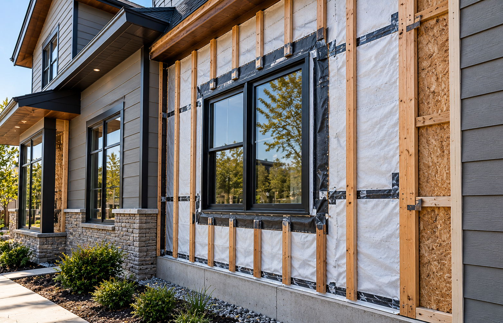
Protection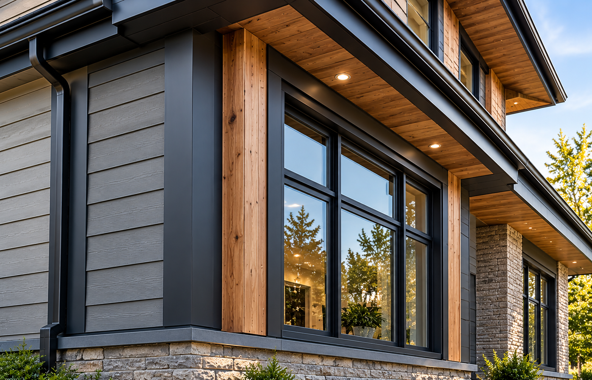
Finishing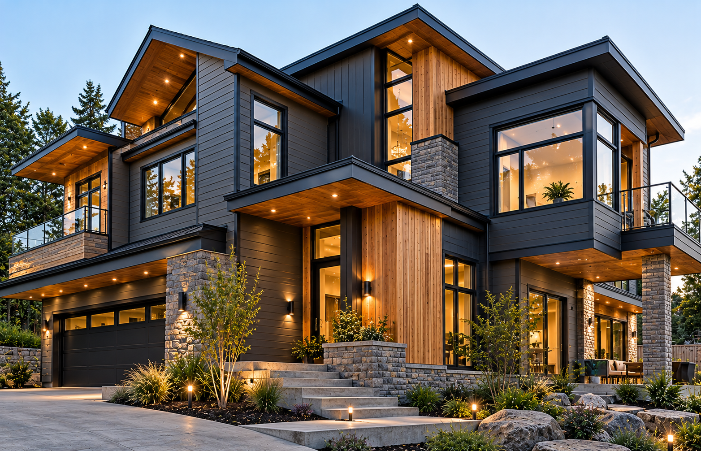
Complexity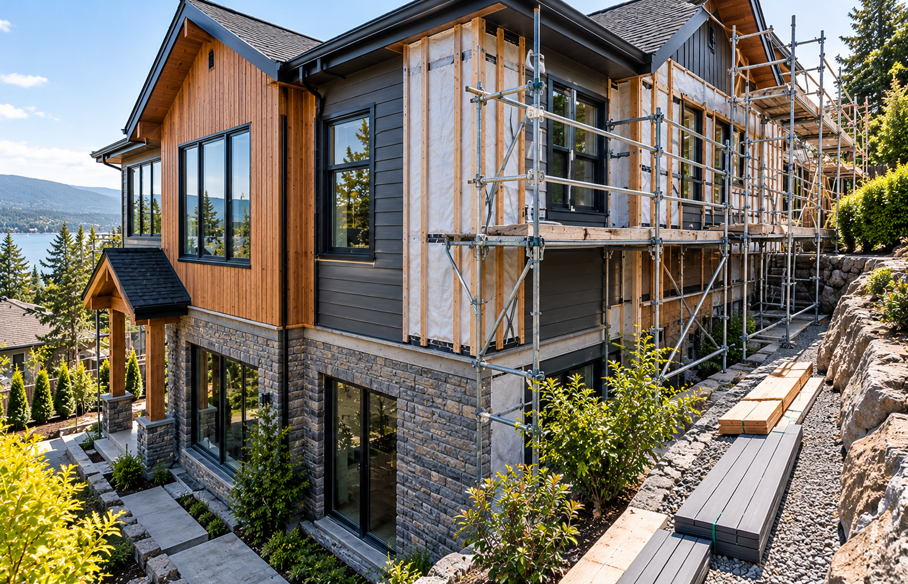
Access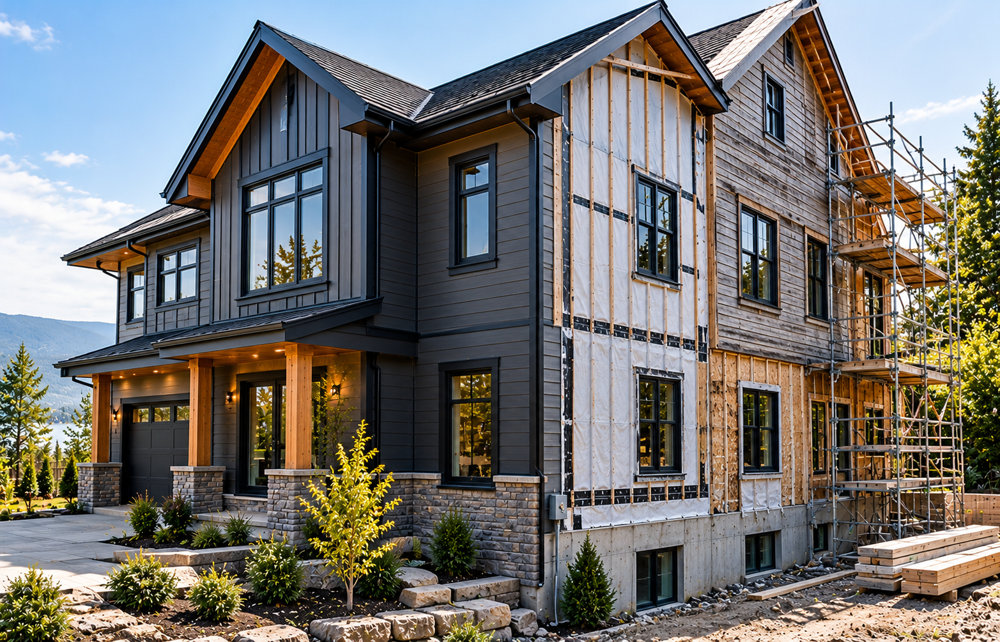
ScopeUnderstanding these variables helps homeowners prioritize budget without sacrificing structural weatherability.
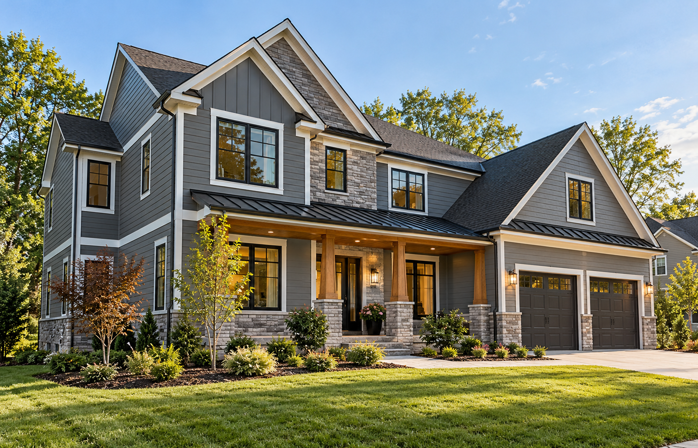
Siding is calculated in "squares" (100 square feet). Larger exterior envelopes naturally require more material, fastening systems, and labor hours, though larger surface spans often provide bulk material efficiencies.
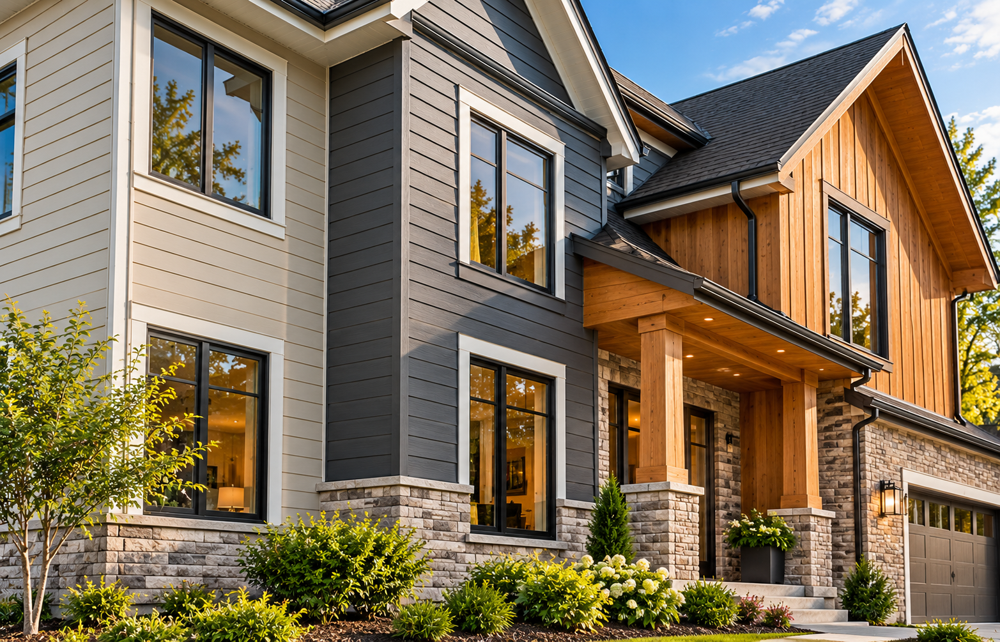
From budget-conscious insulated vinyl to non-combustible Class A fiber cement or premium cedar shiplap, raw material cost and the specialized tools and crew certifications required for installation differ significantly.
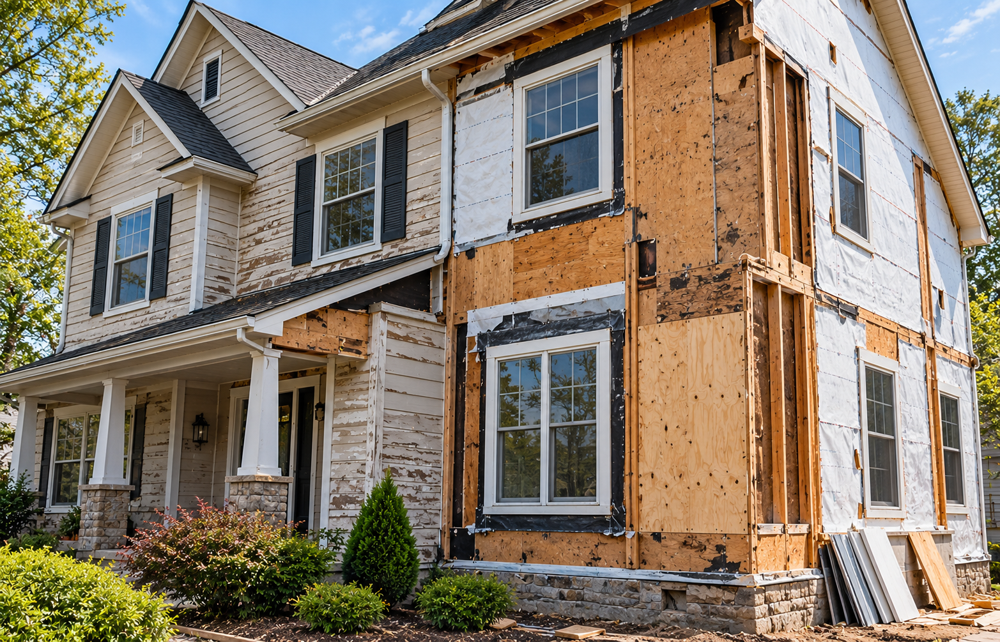
Tear-off labor and municipal disposal fees depend on current siding layers. If underlying plywood sheathing exhibits hidden moisture rot, structural repairs must occur before new cladding goes on.
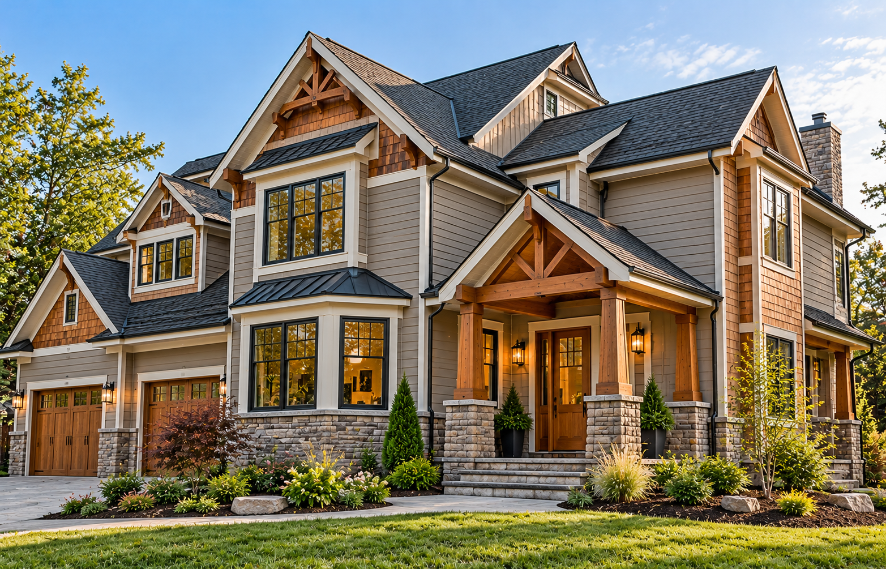
A simple rectangular two-story home with 4 outside corners installs much faster than a Craftsman with 16 corners, bay windows, roofline valleys, and decorative gable details requiring precision cuts.
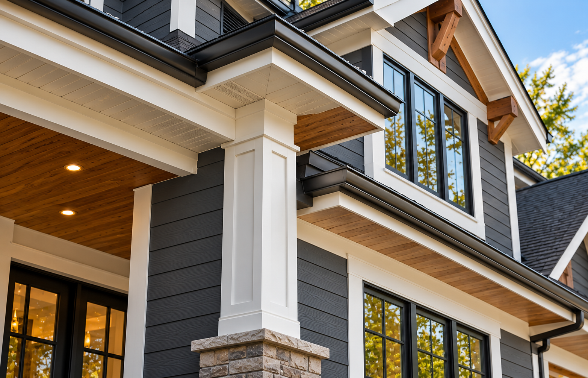
Trim protects vulnerability points. Upgrading to wide architectural frieze boards, composite corner posts, vented soffit panels, and custom-bent aluminum flashing adds distinct curb appeal and longevity.
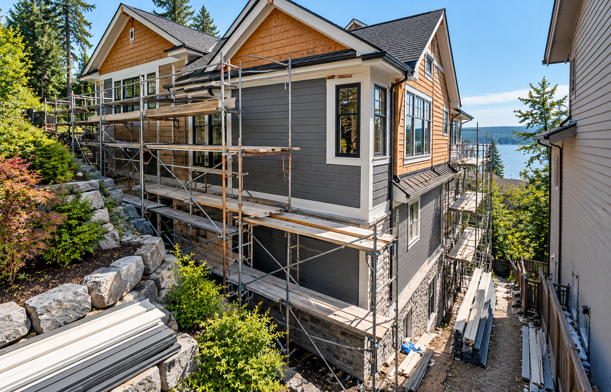
Steep lot grades, dense perimeter landscaping, tight lot lines between neighboring structures, and multi-story working heights require scaffolding towers and specialized safety rigging that influence labor hours.
Understand the economic trade-offs, maintenance life-cycles, and installation demands of the three primary siding mediums.
The most accessible upfront investment. Modern contoured foam backing provides impact strength and with practically zero lifetime painting requirements.
Engineered Portland cement and cellulose fibers. Non-combustible, authentic deep shadow reveals, and resistance to woodpeckers, rot, and severe storm debris.
Authentic organic grain and aromatic beauty. Hand-graded timber providing unmatched natural prestige for historic restorations and luxury custom architecture.
A reputable contractor builds your estimate sequentially based on verified site data rather than generating arbitrary computer guesses.
Laser 3D scanning of exact wall and trim areas there.
Specification of profile, gauge, and finish the work.
Inspecting underlying barrier and moisture wrap.
Certified crew labor, rigging, and fastening thing.
Custom aluminum capping, corners, and gutters.
Firm itemized written proposal with no hidden extras.
Select your property characteristics below to prepare your project profile for a tailored, written estimate.
Your profile is customized and ready for a personalized, itemized estimate.
Examine how different project objectives shape material choices, installation scope, and overall project planning.
A homeowner updating an aging colonial. Existing wood siding is in sound condition, allowing new insulated vinyl or fiber cement installation with minimal sheathing repairs and modern black trim accents.
Complete tear-off of 30-year-old failing aluminum siding on a two-story home. Scope includes high-performance Tyvek drainable wrap, new corner boards, and complete James Hardie lap installation.
Custom architectural residence requiring clean modern lines. Involves engineered rainscreen furring strips, mitered exterior corners, and mixed vertical Western Cedar accents on gable facades.
Replacing front-facing weather-beaten cedar shakes while preserving vinyl on the rear elev-ations. Balances high street curb appeal with controlled budget allocation for the project & future works .
We believe in transparent scopes. Here is how standard project elements distinguish from property-dependent additions.
Components typically covered in all full-perimeter residential proposals:
Items evaluated on an individual home basis during physical inspection:
No vague ballpark figures on a napkin. We deliver line-by-line transparent project schedules.
| Scope Item & Architectural Component | Specification / Standard |
Scope Verification |
|---|---|---|
| Wall Surface Cladding | James Hardie 8.25" Cedarmill Lap (7" Exposure) | Verified via 3D Scan |
| Moisture Management | HydroGap Drainable WRB + FlexWrap Sill Pan Tape | Complete 360° Wrap |
| Architectural Corner Trim | 5/4 x 4" HardieTrim ColorPlus Finish (Iron Gray) | Mitered & Sealed |
| Window & Door Head Flashing | Custom-Broke 0.024 Gauge Baked Aluminum Drip Cap | All Openings |
| Old Siding Tear-Off & Disposal | Single Layer Vinyl Removal & Dumpster Carting | Full Clean Sweep |
| Craftsmanship Warranty | 25-Year Certified Workmanship Guarantee | Included in Scope |
Honest answers to the most common financial inquiries regarding exterior siding renovations.
A transparent, structured consultation designed around your timeline.
Share basic property details and your architectural vision using our online form or direct phone line to specialist.
Review actual sample swatches of vinyl, fiber cement, and cedar at your kitchen table with our consultant.
We perform precise 3D surface measurements and inspect substrate condition around all windows and eaves.
Review a formal, itemized proposal valid for 30 days with guaranteed pricing and zero high-pressure sales.
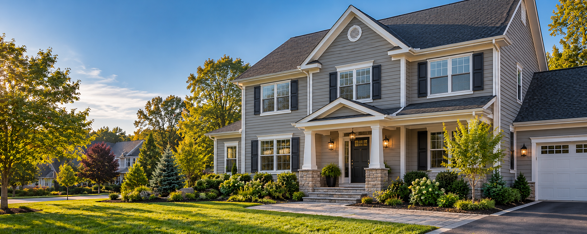
Eliminate pricing guesswork. Receive a binding line-item proposal with full material, labor, and warranty itemization.